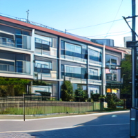

TSD Network Location / Organization Template 1.0 (https://www.thesupremedirector.xyz). Use or distribution of this template or modified versions of this template without this line of attribution is strictly prohibited.
Name: ミナミ's Apartment
Age: 10-15 years Era / Year of Origin: Present Era
Description of area: An apartment complex in Sendai, Miyagi, Japan. Consists of two bedrooms, one bathroom, a living room, and a kitchen. ミナミ's Apartment is within 15 minute walking distance of the 席裏 Household.
Ambient Theme: -
(Choose from below as needed, or alternatively link to a character)
N/A
Image of location:
